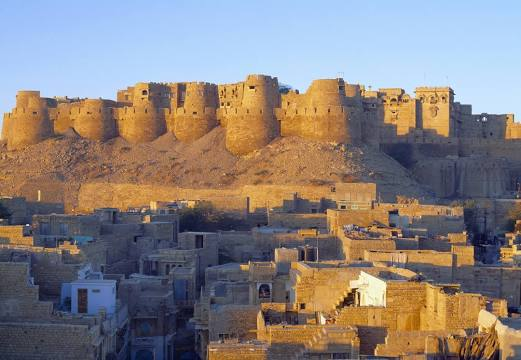

Historic Places in India
TAJ MAHAL

The Taj Mahal is an Islamic ivory-white marble mausoleum on the right bank of the river Yamuna in the Indian city of Agra. It was commissioned in 1631 by the Mughal emperor Shah Jahan (r. 1628–1658) to house the tomb of his favourite wife, Mumtaz Mahal; it also houses the tomb of Shah Jahan himself. The tomb is the centrepiece of a 17-hectare complex, which includes a mosque and a guest house, and is set in formal gardens bounded on three sides by a crenellated wall.
RED FORT

The Red Fort or Lal Qila is a historic fort in Old Delhi, Delhi in India that served as the main residence of the Mughal Emperors. Emperor Shah Jahan commissioned construction of the Red Fort on 12 May 1638, when he decided to shift his capital from Agra to Delhi. Originally red and white, its design is credited to architect Ustad Ahmad Lahori, who also constructed the Taj Mahal. The fort represents the peak in Mughal architecture under Shah Jahan, and combines Persianate palace architecture with Indian traditions.
INDIA GATE

The India Gate (formerly known as the All India War Memorial) is a war memorial located astride the Rajpath on the eastern edge of the "ceremonial axis" of New Delhi, formerly called duty path. It stands as a memorial to 84,000 soldiers of the British Indian Army who died between 1914 and 1921 in the First World War, in France, Flanders, Mesopotamia, Persia, East Africa, Gallipoli and elsewhere in the Near and the Far East, and the Third Anglo-Afghan War. 13,300 servicemen's names, including some soldiers and officers from the United Kingdom, are inscribed on the gate.[2] Designed by Sir Edwin Lutyens, the gate evokes the architectural style of the memorial arch such as the Arch of Constantine, in Rome, and is often compared to the Arc de Triomphe in Paris, and the Gateway of India in Mumbai
LOTUS TEMPLE

The Lotus Temple, located in Delhi, India, is a Baháʼí House of Worship that was dedicated in December 1986. Notable for its flowerlike shape, it has become a prominent attraction in the city. Like all other Bahá’í Houses of Worship, the Lotus Temple is open to all, regardless of religion or any other qualification. The building is composed of 27 free-standing marble-clad "petals" arranged in clusters of three to form nine sides, with nine doors opening onto a central hall with a height of slightly over 34 meters and a capacity of 1,300 people. The Lotus Temple has won numerous architectural awards and has been featured in many newspaper and magazine articles.
JAMA MASJID

The Masjid-i Jehan-Numa (lit. 'World-reflecting Mosque'), commonly known as the Jama Masjid of Delhi, is one of the largest mosques in India.It was built by the Mughal Emperor Shah Jahan between 1650 and 1656, and inaugurated by its first Imam, Syed Abdul Ghafoor Shah Bukhari. Situated in the Mughal capital of Shahjahanabad (today Old Delhi), it served as the imperial mosque of the Mughal emperors until the demise of the empire in 1857.The Jama Masjid was regarded as a symbolic node of Islamic power across India, well into the colonial era.
AGRA FORT

Agra fort is a historical fort in the city of Agra in India also known as red fort. It was built during 1565-1573 for Mughal Emperor Akbar. It was the main residence of the rulers of Sikarwar clan of Rajputs until mughals occupied it and Mughal Dynasty until 1638, when the capital was shifted from Agra to Delhi. It was also known as the “Lal-Qila”, “Fort Rouge” or “Qila-i-Akbari”.[1] Before capture by the British, the last Indian rulers to have occupied it were the Marathas. In 1983, the Agra fort was life inscribed as a UNESCO World Heritage Site.[2] It is about 2.5 km northwest of its more famous sister monument, the Taj Mahal. The fort can be more accurately described as the walled city.
MYSORE PALACE

The Mysore Palace, also known as Amba Vilas Palace, is a historical palace and a royal residence (house). It is located in Mysore, Karnataka. It used to be the official residence of the Wadiyar dynasty and the seat of the Kingdom of Mysore. The palace is in the centre of Mysore, and faces the Chamundi Hills eastward. Mysore is commonly described as the 'City of Palaces', and there are seven palaces including this one. However, the Mysore Palace refers specifically to the one within the new fort.
JAISALMER
Jaisalmer , nicknamed "The Golden city", is a city in the Indian state of Rajasthan, located 575 kilometres (357 mi) west of the state capital Jaipur. The town stands on a ridge of yellowish sandstone and is crowned by the ancient Jaisalmer Fort. This fort contains a royal palace and several ornate Jain temples. Many of the houses and temples of both the fort and of the town below are built of finely sculptured sandstone.
GOLDEN TEMPLE

The Golden Temple (also known as the Harmandir Sahib, lit. 'abode of God', Punjabi, or the Darbār Sahib, 'exalted court', is a gurdwara located in the city of Amritsar, Punjab, India.[3][4] It is the preeminent spiritual site of Sikhism. It is one of the holiest sites in Sikhism, alongside the Gurdwara Darbar Sahib Kartarpur in Kartarpur, and Gurdwara Janam Asthan in Nankana Sahib.
QUTAB MINAR

The Qutb Minar, also spelled Qutub Minar and Qutab Minar, is a minaret and "victory tower" that forms part of the Qutb complex, which lies at the site of Delhi’s oldest fortified city, Lal Kot, founded by the Tomar Rajputs.[3] It is a UNESCO World Heritage Site in the Mehrauli area of South Delhi, India. It is one of the most visited tourist spots in the city, mostly built between 1199 and 1220